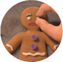

RELEVAMIENTO DE CONTENIDOS
Relevamiento de personaje
-personalidad-
- Es un personaje muy leal y con un carácter fuerte.
- Se negó a traicionar a sus amigos, hecho que se comprueba cuando es torturado por Lord Farquaad para que traicione a sus amigos, a pesar de que le corta sus pequeñas piernas, él sigue fiel a sus principios.
- Tiene una personalidad dominante y se enfrenta ante cualquier situación.
-aspecto-
- Jengi es un diminuto hombre de jengibre.
- Es una galletita.
- Tiene una morfología redondeada la cual predomina en su silueta y en los detalles estéticos del personaje.
- Es de color marrón, con detalles blancos, violeta y rojo.
- Tiene botones de gomita.
-contexto-
- El hombre de jengibre, también llamado "Jengi", es una galletita de jengibre que fue horneada por Jero el Pastelero.
- Es un personaje secundario de la saga de "Shrek".
- Él es un aliado de Shrek y un personaje de apoyo en las películas de la saga Shrek.
- Perdió a su novia porque Santa Claus la devoró, según cuenta en Shrek the Halls.
